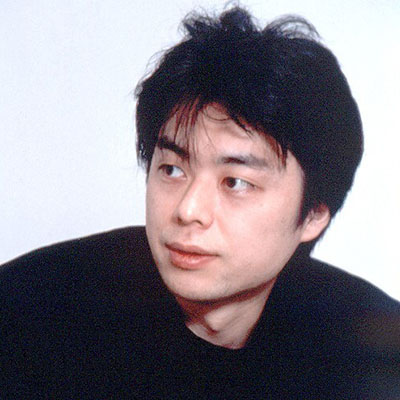
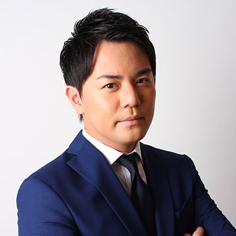
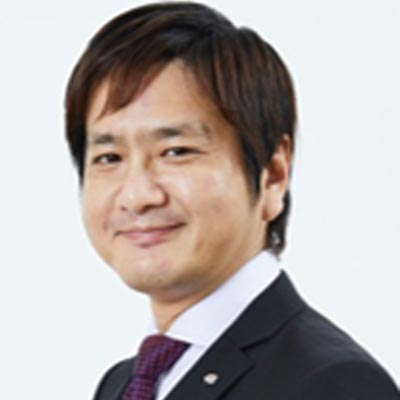
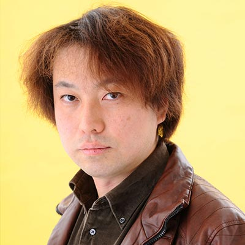
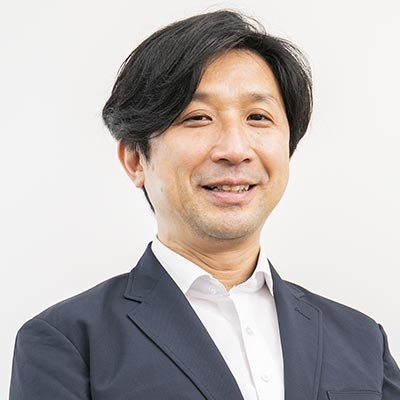
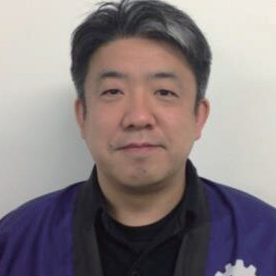

TGS2020 ONLINE streams an official program, in which the exhibitor sends out the latest information and other information, as well as the organizer's keynote speech, e-Sports X, and indie developer presentation event ""SENSE OF WONDER NIGHT(SOWN).""and“Japan Game Awards”.
No pre-registrations or login are necessary to watch. The programs are free viewership. Check out ""Streaming Schedule"" for the official program list.
"TOKYO GAME SHOW 2020 ONLINE provides Official Channel to the following video platforms: YouTube, Twitter, Twitch, niconico, TikTok Live, Douyu (China), Bilibili (China), Douyin (China), and Amazon Japan Special Venue. Viewers may select the plaforms from the link at TGS2020 ONLINE. Enjoy your viewership at TGS2020 ONLINE. (*).
Also, many programs will be archived even after live distribution. You can view it as many times as you like for free. However, please note that the archive period may be limited depending on the program.
*Some platforms may not be available for viewing upon programs. In addition, some programs are also available in English and Chinese for overseas audiences. If you have any problems viewing, please check the troubleshooting on each platform."
TGS Official Supporter
Hajime Syacho
Hajime Syacho, a video creator who has gained overwhelming support by teens and 20s, has been selected as the official supporter to convey the appeal of TGS2020 ONLINE to a wide range of people. Hajime Syacho, who is also known as a game lover, distributes live game videos on his YouTube channel ""Hajime Syacho 2 (hajime)"", and the number of subscribers is ""Hajime Syacho (hajime)"". In total, there are 11.47 million viewers. Hajime Syacho will appear in the ""Opening Program"" and ""Ending Program"" of TGS2020 ONLINE. Please check it out.
[Comment from Hajime Syacho as an TGS2020 ONLINE Official Supporter] The inauguration video is available on the TGS2020 ONLINE official website (http://tgs.cesa.or.jp/) and the TGS official channel. Check it out.
The TGS2020 ONLINE official program will be greatly cheered by three general MCs. The 3 MCs will take turns appearing on the program for 4 days, and deliver the official exhibitor program and sponsor program to the viewers.

Koji WATANABE
K-CAFE restaurant owner on Nakano Broadway, CEO of game and video software production company "GTV", cyberpunk novelist. WATANABE is also a part-time lecturer at Waseda University Graduate School.

Kosuke HIRAIWA
Freelance announcer from Shinagawa-ku, Tokyo Representative Director of ODYSSEY Co., Ltd. HIRAIWA has been working as an ""esports caster"" since he was an announcer for Asahi Broadcasting TV (ABC TV), which he was enrolled until June 15, 2018.
Shouhei TAGUCHI
Born in Yokohama. TAGUCHI was formerly caster at TV Tokyo. He is characterized as ""Best nerd in the TV announcer world"", and he was activated as an ""eSports caster"" at TV Tokyo.
Opening Program 『Forerunner！TGS2020 ONLINE』
Streaming Date
Thursday, September 24, 2020, from 20:00 to 20:50 (Japan Standard Time /UTC+9)
Three official program MCs and TGS2020 ONLINE official supporter Hajime Syacho will introduce the highlights of the four days event.
Presenter: Koji WATANABE, Kosuke HIRAIWA, Shouhei TAGUCHI, Hajime Syacho, and more...
Friday, September 25, 2020, from 19:00 to 19:50 (Japan Standard Time /UTC+9)
As society undergoes major changes due to Covid-19, the possibilities of the game continue to expand, with the release of next-generation consoles and their game titles, and the increase in e-Sports players. On the other hand, the game production process is changing due to the influence of COVID-19. Representatives of four major Japanese publishers talk about the everyday life that games bring.
Coordinator
Katsuhiko HAYASHI
KADOKAWA Game Linkage
After working as the editor-in-chief of ""Weekly Famitsu"", he became the representative of the Famitsu Group from April 2020. Aiming to create time-leading services and content in the ever-evolving game industry

Daisuke UCHIYAMA
BANDAI NAMCO Studios
President & CEO
When UCHIYAMA was active as producer, he worked on titles such as "Dragon Ball Series" and ".hack", and was mainly in charge of the worldwide console game division of BANDAI NAMCO Entertainment Inc., such as challenging cloud gaming services and e-Sports. Currently, he is trying to develop an in-house title that he proposes to the world.
Jun TAKEUCHI
CAPCOM
Managing Executive Officer and General Manager, R&D Department 1
Joined CAPCOM in 1991 as a designer. In ""Resident Evil"" and ""Resident Evil 2"", TAKEUCHI is in charge of design supervision of the chief designer and weapons in general. After serving as a director for ""Onimusha"", he was a producer for ""Onimusha 3"". Representative works include ""Resident Evil 5"", ""Lost Planet Extreme Condition"", and ""Lost Planet 2"". Currently, he is engaged in the development of global titles as CS First Development Supervisor.
Hiroshi TANIBUCHI
KONAMI Digital Entertainment
[Powerful Professional Baseball][Professional Baseball Spirits] Series
Executive Director
Joined KONAMI as a programmer in April 1994. Assigned to the ""Powerful Professional Baseball"" production team. Since then, he has been involved in the production of baseball titles for ""PowerPro"" and ""Prospi(Professional Baseball Spirits)"" after working as a director, producer, and general producer. Currently, as an executive director, TANIBUCHI manages the quality of all baseball titles and promotes eSports (eBASEBALL Pro League).
Naoki HAMAGUCHI
SQUARE ENIX
Manager, Division 1
Creative Business Unit 1
FF7Remake CO-DIRECTOR
After joining SQUARE ENIX in 2003, HAMAGUCHI participated in the development of the highly acclaimed FINAL FANTASY XII. Since then, he has been involved in several titles of FINAL FANTASY, which has been enthusiastically supported, including the FINAL FANTASY XIII series and MOBIUS FINAL FANTASY. Recently, as a co-director of FINAL FANTASY VII REMAKE, he has collaborated with co-directors Motomu Toriyama and director Tetsuya Nomura, and has taken advantage of his wealth of experience to be responsible for game design and programming.
Friday, September 25, 2020, from 11:00 to 11:50 (Japan Standard Time /UTC+9)
Game industry leaders look to 2021 with a variety of the latest technology trends that drive the game industry, including new hardware, game engines that draw the latest games, new devices such as VR and AR, and cloud services.
Kiyoshi SHIN
Game Journalist
CEO of Thirdverse, developed VR swashbuckler game "Sword of Gargantua". Associate Professor at Digital Hollywood University Graduate School. Director of Tokyo XR Startups. In his book, "The Impact of VR Business" Virtual World "Creates Huge Money" (NHK Publishing).
Yohei YANASE
Unity Technologies Japan
Product Evangelist / Educational Lead
Since YANASE was a student, he has gained a career in Nippon Computer Systems Messiah Division, Career Software, Koei Net, etc., and has been involved in game production as a game designer / scenario writer at Sony Computer Entertainment, Atlas, Game Republic, CyberConnect2, etc. Major projects include ""Langrisser,"" ""Growlanser,"" ""Wanda and the Colossus,"" and ""Folks Soul Lost Tradition."" Since 2012, he has been a researcher at SQUARE ENIX, and is currently working as a researcher at Unity Technologies Japan while in charge of academic and educational fields. Received the Excellence Award in the Entertainment Division of the Japan Media Arts Festival at the 2017 Unlimited Corridor

Zenji NISHIKAWA
Technical Journalist
NISHIKAWA is focusing on coverage on themes such as game development technology, semiconductor technology, video technology, and automobile technology. Specially Appointed Professor at Kogakuin University, Special Lecturer at Tokyo Polytechnic University, Advisor to monoAI technology
Saturday, September 26, 2020, from 10:00 to 10:50 (Japan Standard Time /UTC+9)
Esports is expanding its base. Key persons from different fields such as professional esports teams, sponsor companies, and gaming device suppliers will be gathering to convey the changes in the forefront of esports. E-sports in which professional athletes compete for skills, amateur e-sports in which corporate competition and internal activities of the company are lively, and e-sports as targets for watching games and cheering. Now that many tournaments have been switched online due to the influence of the corona disaster, how to fully enjoy e-sports?
Rei NISHITANI
Rush Gaming CEO
Wekids CEO
Founded Wekids in 2014, which undertakes marketing agency and community management mainly in the game field. Also serves as CEO of "Rush Gaming", an esports team active in FPS games such as Call of Duty.

Takashi FUKUYOSHI
Sapporo Breweries
Communication Development Department
Senior Media Planning Manager
Joined Sapporo Breweries in 2014 after working for a domestic liquor maker and a foreign-owned maker. Since September 2015, he has been in charge of the WEB in the advertising room and continues to this day.
David Bennett
Lenovo Japan
President & CEO
Born in Canada, graduated from the University of Toronto Graduate School. Completed the Japanese language program at Waseda University and studied Japanese classical literature at Gakushuin Women's University Graduate School. Joined Lenovo Group in May 2018 and served as president of Lenovo Japan and NEC Personal Computer as Vice President of Japanese Market. A recent book, "Too Mysterious Japanese That Foreign Presidents Meet".
"Make a Game with Nintendo Switch & Become a Game Creator!"
Streaming Date
Sunday, September 27, 2020, from 10:00 to 10:50 (Japan Standard Time /UTC+9)
The big veteran game creator ""Hakase"" will tell you what game creators are doing while making games! ""Petitcon 4 SmileBASIC"" that you can make and play games with Nintendo Switch (TM) is used to make games. Let's make a game using ""Petit Computer 4"" that can make pictures and sounds as well as programming. How can I become a game creator? There is also a question corner where Hakase can answer your questions! This is a program for children who want to be a game creator, but don't know what they are doing or what to do.

Takaki KOBAYASHI
SmileBoom
President & CEO
Since 1985, KOBAYASHI has been the director of many original games such as "Woody Poco" (PC), "Ore no Ryouri" (PS) and "Gacharoku" (PS2), and is still involved in game production at the forefront. In addition, he has been holding programming workshops for children and teaching at various schools including universities for many years, and in cooperation with industry groups such as CESA, his lifework is to develop human resources in the game industry. Visiting Professor, Department of Media Design, Faculty of Future Design, Hokkaido University of Science. Visiting professor, Faculty of Information and Media Studies, Hokkaido Information University. https://smileboom.com/product/ twitter @notohoho
UI
Movie Creator
I love games, so I put out videos of various games! Occasionally everyday. I am confident that the badness of gacha pulling is worse than anyone else.
September 24 (Thursday) through 27 (Sunday), 2020 (Japan Standard Time /UTC+9)
TOKYO GAME SHOW esports competition, which is attended by many visitors every year, will also be holding online this year. TGS2020 ONLINE Exhibitors will prepare ""e-Sports X"" to hold competitions, and enjoy a number of exciting battles for four days from September 24th (Thursday) to 27th (Sunday). e-Sports X is free to watch and no login required.
Friday, September 25, 2020 17:00-19:00 (Japan Standard Time /UTC+9)
SENSE OF WONDER NIGHT 2020 (SOWN2020) is ""the sense that everyone changes their own world instantly when they see the concept or hear the concept"" = ""SENSE OF WONDER"". This event explorers to discover game ideas that cause ""WONDER"" and give game developers the opportunity to make presentations and introduce works at TOKYO GAME SHOW venue. This year, the 13th time, will be holding online.
Japan Game Awards are holding every year at the TOKYO GAME SHOW venue, with an award of "works" and "persons" as a "more meaningful and meaningful award system". "Games of the Year Division" for already released works, "Amateur Division" for original and non-marketed works made by amateurs, "U18 Division" regardless of corporation, organization, or individual, persons under 18 years old. The awards ceremony will be held in the three categories.
Closing Program 『TGS2020 ONLINE Fan Meeting-Towards 2021-』
Streaming Date
Sunday, September 27, 2020, from 24:00 to 24:50 (Japan Standard Time /UTC+9)
Official program MC and official supporters will look back on TGS2020 ONLINE and talk about the outlook for TGS2021.TGS2020 ONLINE invited TGS fans from the official supporters Hajime Syacho, as well as everyone who cooperated with TGS this time, and behind the scenes to support online operations, and looked back on the four-days TOKYO GAME SHOW from various perspectives. While talking about the outlook for 2021.
Presenter: Koji WATANABE, Kosuke HIRAIWA, Shouhei TAGUCHI, Hajime Syacho, and more...